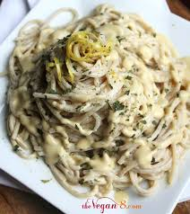

Vegan Alfredo Sauce

This is the best Vegan Alfredo Sauce Ever! Easy to make with just a handful of ingredients and ready in 15 minutes or less. No one will know it’s vegan!
Ingredients:
- Raw cashews: They are the base for the delicious creamy sauce. You can try using slivered almonds or sunflower seeds instead, but it won’t quite be the same.
- Nutritional yeast: For a cheesy taste. May omit if you don’t like it.
- Onion: One medium red oninon.
- Garlic: use freshly minced garlic for the best flavor.
- Unsweetened almond milk: For garnish.
- Olive Oil: For sautéing the onions and garlic.
- A high powered blender for best results : I highly recommend a Vitamix or other powerful blender. A regular blender can possibly be used, but the sauce won’t get as creamy.
- Lime Juice: use freshly squeezed lime/lemon juice.
How to Make vegan alfredo sauce
- Soak the cashews for 5 minutes in hot water. I simply use my tea kettle to boil water, and pour it over the cashews in a glass measuring cup.
- Sauté 1/2 an onion and 6 cloves of garlic in a small pan for 5 minutes.
- Add the drained cashews, onion/garlic, almond milk, nutritional yeast, lemon juice and salt to a high powered blender and blend until creamy and smooth.
- Stir in the tomatoes and mix.
- Add sauce to pasta, mix and warm if needed. That’s it!